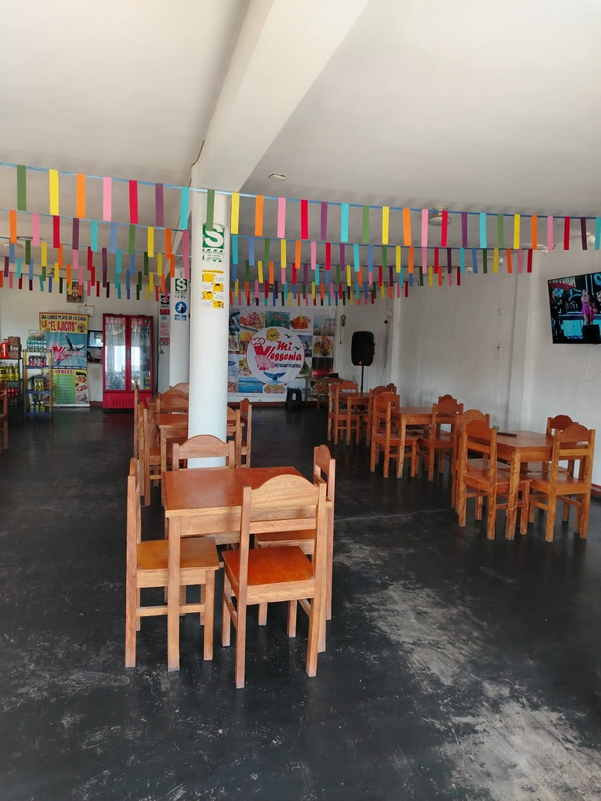
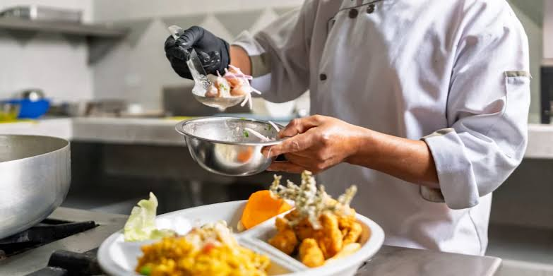

Cancas · Ruta Máncora – Punta Sal
Sabor de mar,
bienvenida de casa
Platillos frescos del Pacífico Norte, cocinados con sazón familiar desde la orilla.
Galería
Haz clic en una foto para verla completa.
Del mar a la mesa,
desde siempre
Mi Yessenia nació en Cancas como un sueño familiar: trasladar el sabor del Pacífico Norte directamente al plato del viajero que recorre la Panamericana. Detrás de cada ceviche hay manos que conocen el mar.
La pesca artesanal de Cancas es el alma del restaurante. Trabajamos con pescadores locales para garantizar que el producto llegue fresco cada mañana, honrando la tradición de la costa norte del Perú.
Hoy, en la ruta Máncora – Cancas – Punta Sal, somos la parada donde el turista descansa y el lugareño se sienta como en casa.

Contáctanos
Reserva tu mesa o consulta lo que necesites.
¿Cómo llegar?
Estamos sobre la Panamericana Norte, en Cancas — a 20 min al sur de Máncora.
¿Tienes un cupón?
Ingresa el código de tu ticket y califica tu experiencia para canjear tu beneficio.